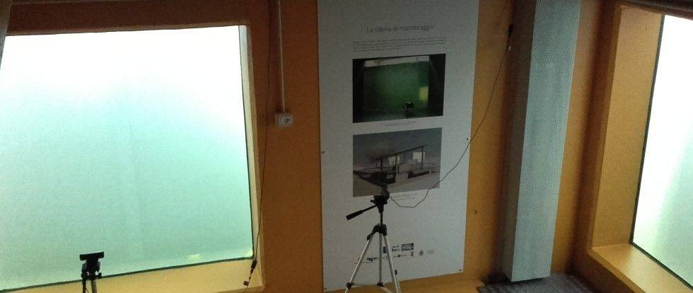
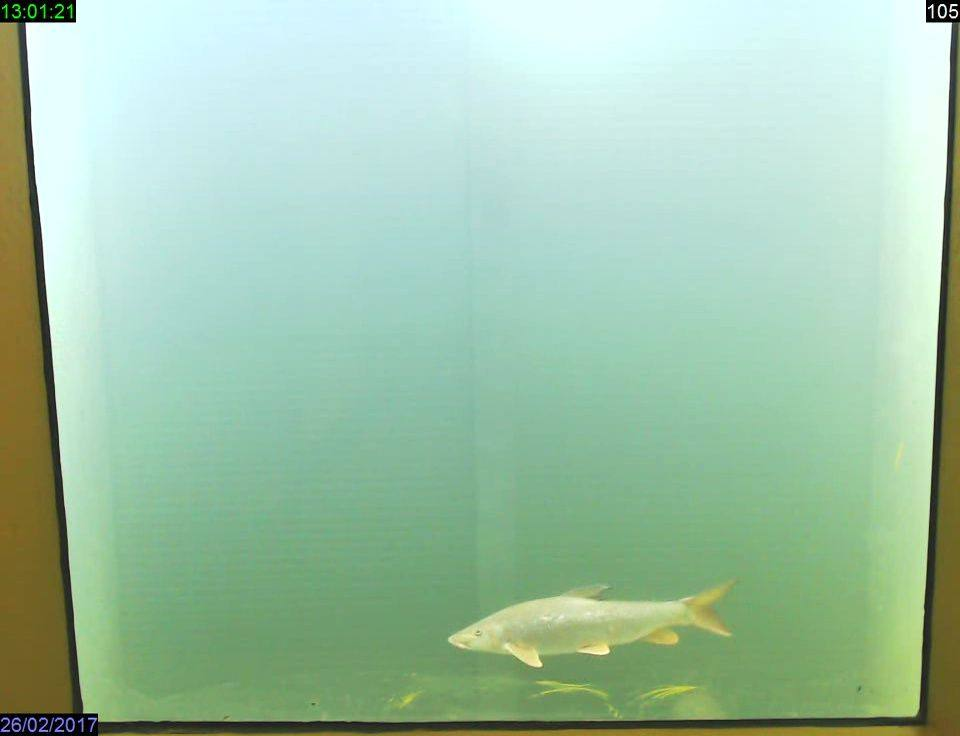
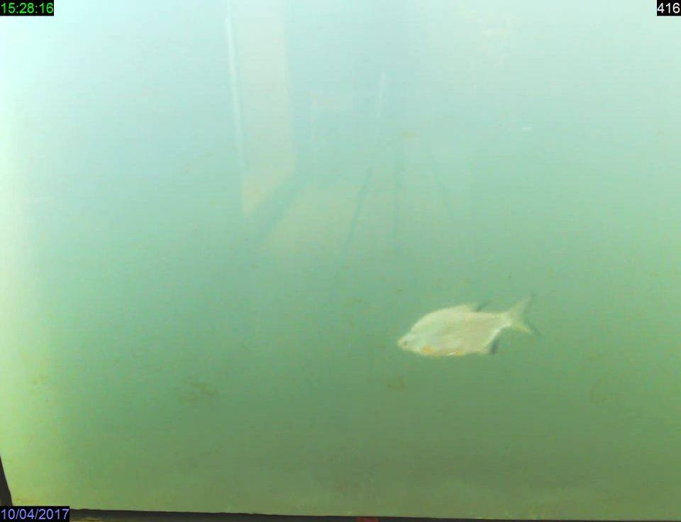
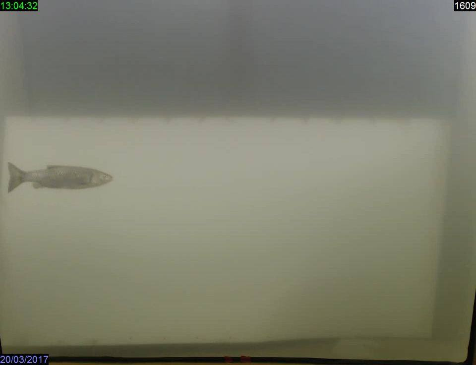
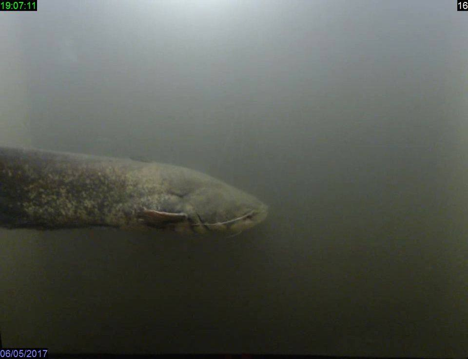
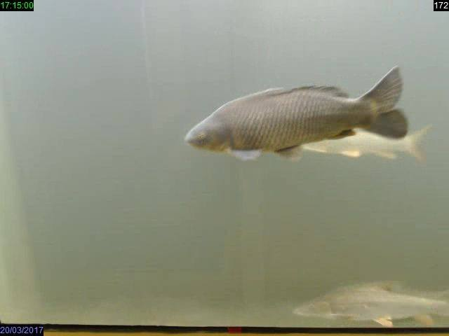
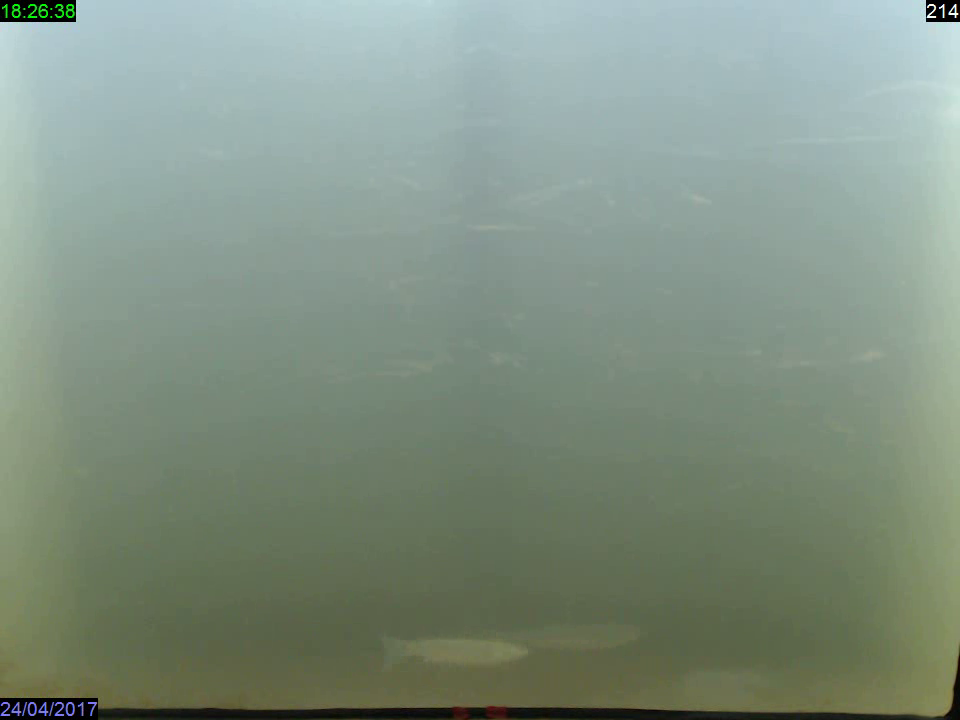
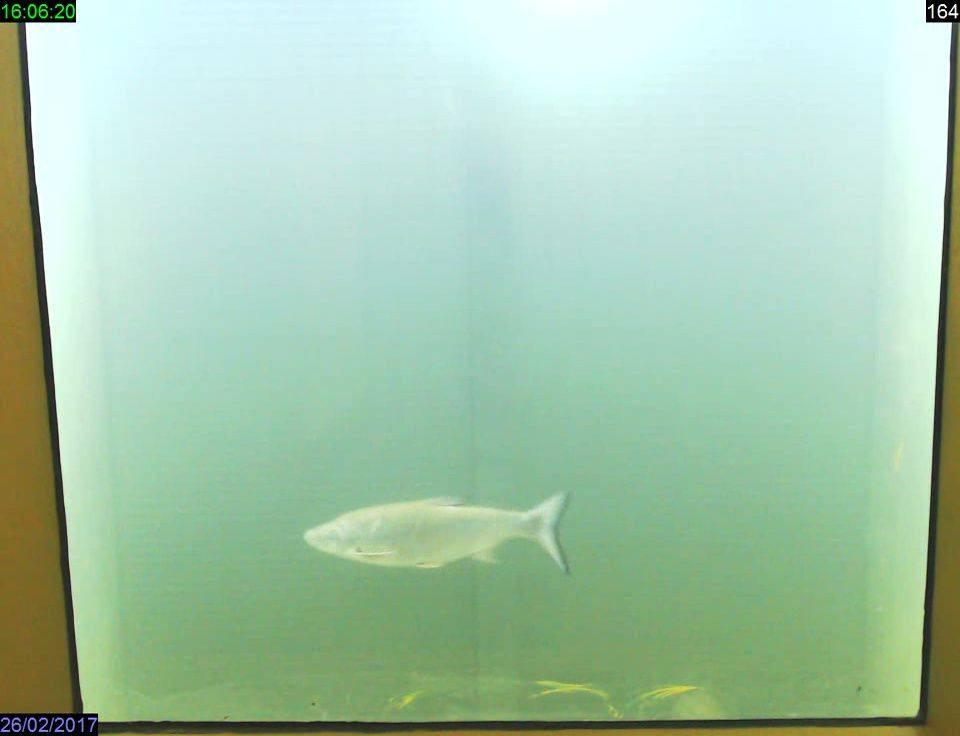

News ·
A Isola Serafini sono arrivati i cefali

A due mesi dall’inaugurazione del passaggio per pesci di Isola Serafini sul Fiume Po, grazie al sistema di videomonitoraggio attivo all’interno della cabina di monitoraggio sono state osservate transitare 13 specie e circa 15000 esemplari. Tra le diverse specie osservate sono da poco giunti anche i cefali, ecco alcune immagini..













